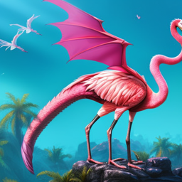

AI Art Isn't Art - Sorry
In my blog post, AI Art Isn't Art - Sorry, I discuss the merits of artifical intelligence-generated art and whether it can be considered art in the traditional sense of the term!

Secrets of the Virginia Tech Tunnels Podcast
In this podcast episode, The Secrets of the Virginia Tech Tunnels, three of my friends and I delve into the Virginia Tech steam tunnel system.
Video Project
In this video project, Jewelry-making Vlog I show you a bit of the process of me making a bracelet..
BeneathVT
BeneathVT is a website I used a lot in our podcast project as a source and reference! It's a really interesting website.